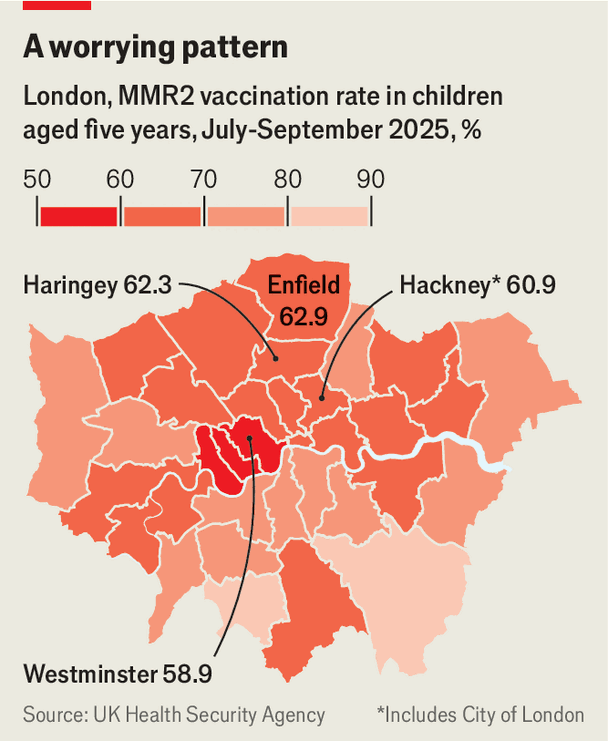

真主党（Hezbollah）拒绝该决定，抱怨此举有利于以色列。非洲联盟拒绝承认由快速支援部队（Rapid Support Forces）领导的苏丹平行政府，该准军事组织正与苏丹军队在内战中交战。特朗普在非洲的特使马萨德·布卢斯（Massad Boulos）暗示一项由美国主导的和平计划可能即将出台，但双方均未表现出准备和解的迹象。俄罗斯拒绝了由英国、法国、德国、荷兰和瑞典联合编写的报告，该报告称亚历山大·纳瓦尔尼（Alexei Navalny）于2024年死于毒箭蛙毒素。当时身为普京政权最突出的批评者，纳瓦尔尼在经历虚假审判后被送往北极惩戒营身亡。报告指出从其尸体提取的样本“确凿证明”他遭毒杀，且俄罗斯具备实施此类袭击的手段。■
美国移民与海关执法局（Immigration and Customs Enforcement）代理局长表示，两名执法人员因涉嫌在1月明尼苏达州发生的一起委内瑞拉男子被射伤事件中作伪证，已被暂停职务。政府已撤销对该男子涉嫌袭击执法人员的指控。与此同时，明尼苏达州调查机构对联邦调查局（FBI）在移民遣返行动抗议期间边境执法人员致命开枪事件中“前所未有的合作缺失”表示关切。在加利福尼亚州太浩湖附近的雪崩中，八名滑雪者遇难，一人下落不明，这起事故成为美国历史上最致命的雪崩之一。人们向去世的杰西·杰克逊（Jesse Jackson）致以哀悼，他享年84岁。■
追查俄罗斯的影子舰队并启动参议院针对购买其石油买家的惩罚计划，或可限制其出口收入。反驳普京关于美欧意图摧毁俄罗斯的宣传将有助于削弱其影响力。纠正他所谓俄罗斯必胜的论调同样重要：没人，尤其是特朗普，愿意支持注定失败的一方。迫使独裁者采取行动实属不易。最终，普京继续战斗的意愿取决于他愿意承受的痛苦程度。但痛苦越深，俄罗斯人越能看清他正将国家推向毁灭。■ For subscribers only: to see how we design each week’s cover, sign up to our weekly Cover Story newsletter .
§005沙特阿拉伯与阿联酋必须解决彼此分歧 领导人
原题：Saudi Arabia and the Emirates must resolve their own differences · 板块：Leaders · 栏目：领导人
在先进经济体中，雇主们已面临填补蓝领和技能型岗位的困难。仅在美国制造业，预计到2033年就将有约190万岗位空缺，因技能差距不断扩大。然而AI投资仍偏向知识型工作；过去一年，75%的IT服务公司投资了AI，而仅37%的医疗保健企业如此。这种失衡意味着AI在最需要缓解压力的领域被低估使用。若AI讨论持续聚焦于优化白领生产力，将错失更紧迫的机会：利用AI支持、维持并提升经济所需且日益难以找到的劳动力。Sander van ’t Noordende兰德斯集团首席执行官荷兰迪门■
从战略层面看，美国人及其盟友应感谢帕帕罗上将负责太平洋事务。正如你所指出的，他擅长低调外交。他同时优先确保战斗准备，又坚定支持航母航空兵的重要性与必要性，尽管华盛顿及其他美军军种中不乏反对者，他们不明智地呼吁削减航母力量。简而言之，帕帕罗上将堪称兼具深思熟虑与进取精神的领导典范。若有人能保持美国在太平洋的战略稳定，他便是不二人选。马克·斯文纳 美国海军退役指挥官（Mark SwingerCCommander US Navy (retired) 弗吉尼亚州斯普林菲尔德）巴尼亚称海军上将一直领导美国印太司令部的说法并不完全准确。
美国空军少将丹尼尔·“菲格”·利夫（Daniel “Fig” Leaf）曾在2007年3月短暂担任当时称为太平洋司令部的指挥官，接替威廉·“福克斯”·法伦（Admiral William “Fox” Fallon）后，直至蒂莫西·基廷（Admiral Timothy Keating）接任前的两周。在这两周里，利夫将军执掌期间，美军在太平洋地区未损失任何军用飞机或舰艇，美同盟关系保持和谐，中国在南海及台湾周边未采取任何挑衅行动，朝鲜也未进行导弹发射或核试验，因此菲格的任期堪称地区指挥官中最为成功的之一。——前美国空军参谋长外交政策顾问埃米尔·斯科登（Emil Skodon）华盛顿特区
巴吉霍特（Bagehot）声称，数十亿英镑被用于挖掘穿越奇尔特恩丘陵（Chiltern Hills）的16公里（10英里）隧道，以掩盖HS2铁路线最恶劣的影响，这一说法在事实层面可能成立，却忽略了实地情况（1月24日）。自该项目启动以来，大量景观已因视觉上受到破坏，对乡村造成不可挽回的损害。从伦敦玛丽勒骨站（London Marylebone）到牛津的列车上，这种影响一目了然。曾经绵延起伏的丘陵地带，如今被沿线路线兴起的小型城镇取代，这正是政府愚蠢决策的丑陋现实。无论如何，当时保守党政府为“掩盖”HS2对保守党选民的最坏影响所花费的这笔钱，显然并未物尽其用。自由民主党人莎拉·格林（Sarah Green）在2021年赢得了该选区的席位，终结了保守党近50年的统治，这是一次对脱欧和HS2项目的抗议性投票。詹姆斯·加德（James Gard），奇尔特恩郡查尔弗顿圣彼得（Chalfont Saint Peter）■
不必为流行歌曲日益阴郁感到沮丧（“Whistle an (un)happy tune”，1月24日）。在美国，Billboard Hot 100榜单上首支登顶的歌曲是1958年里基·纳尔逊（Ricky Nelson）的《Poor Little Fool》，这是一首讲述被女孩捉弄后悲伤的歌曲。英国首支登顶的歌曲则是1952年阿尔·马尔蒂诺（Al Martino）的《Here in my Heart》，一首表达对爱人思念之情的歌曲。因此，悲伤的歌曲自流行音乐诞生之初便广受欢迎，或如埃尔顿·约翰所言，悲伤的歌曲一直销量惊人。亚当·盖伊，达勒姆郡
这意味着在政府忙于追查权贵们每年走私出境的160亿美元财富之际，国家将失去大量贸易和贷款特权。新任财政部长阿米尔·卡希鲁·马哈茂德·乔杜里（Amir Khasru Mahmud Chowdhury）表示，他的优先事项包括削减繁琐的官僚程序、提高国家仅有7%的税收占GDP比重、改善营商成本和便利度，并吸引来自香港和纽约的基金经理。最终，孟加拉国希望与邻国印度重启关系。其外交官们有了新的关键词：“尊严”必须回归双边关系。一位退休大使抱怨称：“直到2024年8月，孟加拉国几乎像印度的附庸国。”被判处死刑的谢赫·哈西娜（Sheikh Hasina）仍以印度德里别墅为居所，作为该国的客人避风港。■
“Yoon Again”派系仍占据上风。PPP现任领导人张东旭（Jang Dong-hyuk）始终坚定支持前总统，尽管该党支持率已跌至25%以下。所谓“Yoon Never Again”派系领导人被指责为叛徒，韩（Han）近期被开除党籍。他在被开除前对《经济学人》表示：“许多人被困在党派框架中，将政治斗争置于捍卫民主之上。”右翼网络评论员推动了“Yoon Again”运动。前历史教师郑汉吉（Jeon Han-gil）利用其庞大的YouTube粉丝基础，成为保守派关键推手。在张东旭暗示可能调整路线后，郑汉吉发出最后通牒，迫使该党领导人不得不退让。■
此类人物融合了关于选举舞弊的阴谋论、针对中国和朝鲜的反共言论以及福音派基督教。他们的追随者定期在首尔市中心集会抗议，采用唐纳德·特朗普（Donald Trump）“MAGA”运动的图腾，佩戴印有“让韩国再次伟大”（Make Korea Great Again）的帽子，高呼“停止偷窃”（Stop the Steal）。反对尹锡悦（Yoon）再次上台的保守派认为，迎合日益极端的选民基础是疏远更广泛公众的捷径。“尹锡悦再次上台如何能成为未来？”韩某（Mr Han）叹息道。超过60%的韩国人认为宣布戒严令构成叛乱。法院判决后继续支持被弹劾的总统不会带来好处：同样比例的选民认为进步党（PPP）不应吸纳尹锡悦的支持者。进步党计划于下月更名，但这不太可能欺骗选民。■
最新预算于2月1日公布，削减了污染治理资金。吸烟提供了一个有用的类比。吸烟者深知长期健康风险，也清楚这是一项昂贵的习惯。但这些是抽象的担忧。同样难以察觉的经济损失也容易被忽视。解决污染问题难度太大，其好处尚在遥远未来，政治利益也过于模糊。然而，已有大量迹象表明，抽象的经济担忧正逐渐转化为具体的商业考量。近期一份文件显示，百货公司Shoppers Stop（Shoppers Stop）将污染列为“2025年第四季度消费者流动性下降和非必需消费减少”的原因。Vishal Mega Mart（Vishal Mega Mart）超市连锁公司CEO在财报电话会议上表示，“北印度空气质量问题”已影响了同期消费增长。■
迪拜离岸金融中心目前已有超过1250家私人投资机构，包括家族办公室，较2024年底的800家大幅增长。尽管阿联酋当局未公布家族办公室的国籍信息，但财富顾问表示，中国资本在近期增长中占比异常突出。迪拜的中国侨民可享受与国内相似的生活条件，城市不仅拥有零星的中餐馆，更建立了完整的供应链以满足其饮食偏好：购物者可在当地最大的中国超市Wemart选购熟悉的品牌，绿叶蔬菜则在沙漠温室中种植。自2020年起，迪拜中国学校（Chinese School Dubai）作为公立机构，以可负担的费用教授中国课程。甚至还有一家中国医院。■
中国社区大多自成一体，一位从中国来的新移民解释说。这场投资浪潮不仅包含家族财富，中国企业正在迪拜多商品交易中心这样的自由贸易区中积极布局。迪拜多商品交易中心（Dubai Multi Commodities Centre）的副首席执行官法里亚尔·阿姆迪（Feryal Ahmadi）表示，该自由贸易区已有超过1000家中国公司。这些企业仅占该自贸区总企业的4%，但过去三年来，其总数每年增长高达四分之一。在迪拜，中国企业的业务范围从四大国有银行和最大的国有石油公司，到科技初创企业，如自动驾驶汽车公司WeRide。陆标家族办公室（Landmark Family Office）的坎贝尔·哈维（Cameron Harvey）表示，香港和新加坡仍是中国人资金的主要枢纽，这得益于两地共享的语言以及这些城市对成熟资本市场的接入。该香港总部的顾问公司正拓展至迪拜。■
原题：Now fills the world’s luxury hampers · 板块：China · 栏目：中国
“MADE IN CHINA”或许很快将成为令人垂涎的标签。这个国家正在蚕食传统上与西方美食相关的高端食品市场。作为全球最大鲟鱼鱼子酱和松露出口国，中国正迅速扩展至鹅肝、橄榄油、抹茶和优质葡萄酒的生产领域。国内对这类珍馐的消费需求与国际市场同步增长。鱼子酱便是规模化创新如何提升效率的典型案例。中国自21世纪初开始养殖鲟鱼，目前产量已占全球鱼子酱总产量的五分之二以上。
桑德·托德里尔（Sander Tordoir）来自欧洲改革中心（Centre for European Reform）的智库表示：“德国的对华政策处于模糊地带。”默茨（Merz）的中国之行将引发关注，但托尔斯坦·本纳（Thorsten Benner）——全球公共政策研究所（Global Public Policy Institute）负责人则指出：“我们对华政策的核心战场其实就在欧洲。”更严格的投资审查是其中一环：去年一家德国风力发电项目在国防部长提出安全担忧后，放弃了中国涡轮机制造商明阳（Mingyang），转而选择西门子歌美飒（Siemens Gamesa），该公司称其选择基于商业考量。默茨誓言将禁止中国企业在德国6g移动网络建设中参与。在欧盟内部，德国对“购买欧洲”（buy Europe）的采购和补贴计划要求表示支持，但程度不及法国保护主义者的主张。
一些人担心过于严格的立场可能将韩国、加拿大等合作伙伴排除在外，而这些国家可能帮助欧盟实现脱碳目标。欧盟委员会正在协调成员国之间激烈的分歧，起草相关立法。但分歧集中在细节，而非原则。官员们承认，对中国的强硬态度可能招致反制。作为主要出口国，德国面临风险；稀土事件已清楚地提醒人们，德国已陷入被勒索的境地。“与列宁主义的一党制国家针锋相对并不容易，”一名官员感叹道。但一些人认为德国和欧洲低估了自身影响力。随着美国加征关税，“放弃欧盟市场将对中国经济造成重大代价，”柏林 Heinrich Böll 基金会北京办事处负责人 Arthur Tarnowski 表示，该机构与德国绿党有关联。■
2月12日，中国反垄断监管机构发布规则，禁止以低于制造成本的价格出售汽车。尚不清楚这些规定将如何严格执行，且以往非正式的遏制价格战措施均未取得成效。外资车企高管表示，他们希望这一举措能取得成功。自2018年以来，外资车企的市场份额已减半。Sino Auto Insights咨询公司分析师屠乐指出，对中国的车企而言，国内市场需求放缓反而会导致该国汽车出口量进一步增加。近年来，中国汽车制造商为寻求更盈利的海外市场，出口量已大幅攀升。Bernstein预计，到2026年，中国汽车出口量将进一步增长10-15%，达到650万至700万辆，相比2018年的约75万辆。
原题：Donald Trump’s policies are reshaping American health care · 板块：United States · 栏目：美国
迈阿密市中心的Care Resource诊所散发着这座城市的氛围。这家非营利诊所明亮且装饰着街头艺术，工作人员讨论古巴与哥伦比亚西班牙语的区别，街道上还停着一辆宾利。但尽管充满魅力，这仍是保障弱势群体的医生诊所。维持其运营需要“拼凑一块拼图”般的资金组合，包括补助金、保险和药房收入，该诊所负责人卡琳·萨贝（Karin Sabey）如此表示。2024年，超过半数患者未参保，这一比例预计将进一步上升。去年，附近迈阿密居民中约三分之一通过《平价医疗法案》（Affordable Care Act, ACA）市场购买了保险。 ■
随着疫情补贴的结束，许多人将面临被排除在外的风险。“任何系统变化都可能带来灾难性后果”，萨贝女士（Ms Sabey）表示。“这就像一张纸牌屋。”唐纳德·特朗普（Donald Trump）的第二个任期已搅动美国医疗体系。削减医疗补助（Medicaid）、药品定价协议、突然兴起的“让美国再次健康”口号以及额外市场补贴的终结，使得医疗体系的各个领域都将受到影响。其结果将对美国人的健康产生持久影响。最大的变化将出现在医疗补助计划（Medicaid），这是美国为低收入人群提供的政府医疗计划，覆盖近7700万美国人。为资助《一个大美法案》（One Big Beautiful Bill Act，BBB）的减税政策，国会预算办公室（Congressional Budget Office，CBO）估计，未来十年将从该保险计划中削减超过9000亿美元。■
尽管疫苗在公众中仍广受欢迎，肯尼迪先生的“让美国再次健康”议程也赢得了一定支持。最新皮尤民调显示，他的净支持率为-4，相较副总统为-14，特朗普则为-18。这使他成为传播反疫苗观点的有效代言人，尤其在韦灵地区更为明显。■ 保持对美国政治的敏锐洞察，请订阅我们的每日简报《美国简报》（The US in brief），获取最新政治新闻的快速分析；以及每周专栏《制衡》（Checks and Balance），深入探讨美国民主现状及选民关切议题。
§025特朗普的“危害认定”决定有多危险
原题：How dangerous is Donald Trump’s “endangerment” decision? · 板块：United States · 栏目：美国
这一原则被称为“重大问题原则”，常被诸如特朗普政府等认为环保署（EPA）在应对气候变化的努力中越权行事的群体引用。然而，美国最高法院在2007年已裁定，温室气体属于污染物范畴，受EPA监管职责覆盖。这一裁决即“马萨诸塞州诉环保署案”（Massachusetts v EPA），为后续的危险性认定铺平了道路。在被明确告知温室气体属于其监管范围后，该机构随即需评估这些气体是否对人类健康构成威胁。环保署称，撤销危险性认定将为美国人节省超过1.3万亿美元（未明确具体时间跨度），通过减轻化石燃料行业负担和降低美国人购买电动车的需求实现这一目标。■
一些人担心，美国汽车制造商可能在电动车领域落后于中国和欧洲企业，后者正在加速电动化进程。另一些人则认为他们或许能在下一届政府调整规则后实现追赶。取消危险认定是否受欢迎仍存疑。特朗普称此举是“奥巴马时期的灾难性政策”。但一项耶鲁大学民调显示，四分之三的美国注册选民认为政府应将二氧化碳视为污染物进行监管。■ 关注美国政治动态，请订阅我们的每日简报《The US in brief》，获取最新政治新闻的快速分析，以及每周专栏《Checks and Balance》，深入探讨美国民主现状及选民关切的核心议题。
§026特朗普政府欲将极权主义组织送上法庭 美国 反极权主义组织
原题：The Trump administration wants to put antifa on trial · 板块：United States · 栏目：美国
他引用了美国司法部（Department of Justice）的起诉书。"我们正将他们视为恐怖分子，如同对待伊斯兰国（ISIS）或基地组织（al-Qaeda）一样。"前司法部官员托马斯·布罗佐夫斯基（Thomas Brzozowski）称，这种做法是"赋予其生命"。为了在恐怖主义指控中获得定罪，检察官们必须证明，即使那些没有开枪的被告，也意图协助杀害警官或破坏财产。"我们谈论的并不是这种人，"其中一名被告的律师帕特里克·麦克莱恩（Patrick McClain）表示；"他们是'对某些群体怀有同理心'而挺身而出的人。"辩护律师们必须将这些说法与部分证据相协调。两名被告据称在抗议前曾侦查过设施以记录监控摄像头和警方部署；其他人则在车内装满了枪支和防弹衣。■
示威者据称使用具有自动删除功能的消息应用进行“行动安全”沟通。审判可能不会终结这场争论。“如果有一群人围坐讨论暴力是影响政府的必要手段，并且有相关对话证据，称该群体是恐怖组织细胞并不极端，”蒙特克莱尔州立大学的弗朗西斯卡·拉加迪亚表示。“但这并不意味着反法西斯组织是恐怖组织，也不意味着反法西斯组织存在。” ■ 关注美国政治动态，请订阅我们的每日简报《美国简报》（The US in brief），获取重要政治新闻的快速分析，以及每周专栏《制衡》（Checks and Balance），探讨美国民主现状和选民关切议题。
§027美国人正将怒火倾泻在食物配送机器人身上
原题：Americans are unleashing their anger on food-delivery robots · 板块：United States · 栏目：美国
微型机器人配送更多外卖或许也能提振本地经济。咨询公司Thunder Said Energy发现，Starship机器人能源效率是摩托车的100倍。唯一的问题是？人们似乎很讨厌它们。社交媒体上行人攻击机器人的视频引发热议。有人似乎在勒索它们要泰式炒粉，有人则通过推倒这些机器人发泄怒火。一段视频中，一名迈阿密男子试图将机器人从桥上扔下。这种愤怒正转化为抗议行动。芝加哥有3300名居民签署请愿书，要求市政府禁止这些机器人。圣母大学编辑委员会呼吁学生抵制它们：“为何要容忍机械化的Grubhub机器人霸凌我们的步行道？”人们对机器人的蔑视并非新现象——尤其在美国。■
他希望将机器人的职责范围扩大到负责药品配送和处理购物退货。要做到这一点，这些机器人仍需继续应对现实世界，他笑着说道：“现实世界是个艰难的地方。” ■ 关注美国政治动态，请订阅我们的每日简报《The US in brief》，获取最新政治新闻的快速分析；以及每周简报《Checks and Balance》，深入探讨美国民主现状与选民关心的核心议题。
§028美国华盛顿最糟糕的工作——国会议员——正在变得更糟
原题：The crummiest job in Washington—congressman—is getting worse · 板块：United States · 栏目：美国
历史上，当足够多的议员发现国会是个令人沮丧的工作场所时，他们就会支持改革，使履职更具意义。1970年代水门事件（Watergate）后便是如此。国会完全可以变得更体面：委员会可以获得更多权力；竞选资金改革可能减少为筹款而拨打电话的时间；议员和工作人员的薪酬也可以适当提高。然而，这一切都需要两党达成一致行动。目前看来，这似乎不太可能。■ 关注美国政治动态，请订阅我们的每日简报《The US in brief》，获取最重要的政治新闻快速分析，以及每周简报《Checks and Balance》，深入探讨美国民主现状和选民关切议题。
§029美国
原题：Different ideas about faith are dividing Republicans over Israel · 板块：United States · 栏目：美国
在右翼阵营，随着特朗普对共和党的控制力在未来数年逐渐减弱，清算的后果可能更加恶劣，因为共和党对以色列的支持在过去数十年中不仅交织着冷战意识形态和权力政治，还融合了基督教信仰。尽管神学仍是许多基督教右翼支持者拥抱以色列的重要理由，但对部分人而言，它正逐渐演变为拒绝以色列存在权利的号召。作为现代保守主义的推动者，威廉·F·巴克利（William F. Buckley）起初并不支持以色列。他成长于1930年代孤立主义、美国优先的共和主义环境中，其父亲对犹太人怀有“强烈憎恨且毫不掩饰”的态度，这一背景被巴克利传记作者萨姆·塔内纳乌斯（Sam Tanenhaus）所记载。■
当共和党总统候选人帕特·布坎南（Pat Buchanan）——一位天主教徒——在1990年代复兴“美国优先”理念并将其与亲劳工政策结合，预演了特朗普后来的民粹主义时，布克利（Buckley）曾撰文称布坎南对以色列的攻击言论“构成反犹太主义”。2000年代，时任总统乔治·W·布什（George W. Bush）提出一项涉及以色列让步领土以建立未来巴勒斯坦国的“和平路线图”，福音派基督徒与右翼以色列人联合抵制他。特朗普曾多次自称是白宫中以色列最坚定的朋友。但其本人推动的“美国优先”理念复兴，却促使其阵营中许多人开始质疑美国对犹太国家的承诺，而在这场争论中，一些陈旧的偏见正重新浮现。■
这种碎片化问题源于美洲豹的“权力的游戏式生活”，卢卡斯·莫加多（Lucas Morgado）表示，他是昂卡纳里（Onçafari）研究小组的生物学家，该小组位于凯曼保护区。近亲繁殖成为常态。因此，进化使雄性美洲豹在成年后本能地离开家族领地，前往数百公里外寻找新领地。人类扩张阻碍了美洲豹的活动范围，导致遗传性疾病增加，最终引发种群崩溃。因此，国际组织和各国政府希望在拉丁美洲建立生态走廊，连接分散栖息地的美洲豹。这项工作始于2018年，当时世界自然基金会（World Wide Fund for Nature）和联合国开发计划署（UN Development Programme）等机构开始寻找合适的土地。十六个拉丁美洲国家已加入这一计划。■
沙特方面也对叙利亚局势表示关切，阿联酋对前极端分子阿赫迈德·沙拉（Ahmed al-Sharaa）持怀疑态度，后者在2024年巴沙尔·阿萨德政权垮台后掌权。沙特官员称，若阿联酋停止支持地区叛军，这场争端将得以结束。但阿联酋的真实诉求尚不明确——他们未对多次采访请求作出回应——但他们不太可能屈服于沙特的要求。有趣的一幕是，卡塔尔正试图在昔日的封锁国之间进行调解。2月4日，卡塔尔埃米尔会见了沙特国防大臣卡利德·本·萨勒曼（Khalid bin Salman），后者是王储的弟弟。十天后，他飞往阿布扎比会见阿联酋总统穆罕默德·本·扎耶德（Muhammad bin Zayed）。巴林、埃及和土耳其也在尝试推动外交解决。不过截至目前，这些会晤似乎进展甚微。美国的介入或许能起到推动作用。■
原题：The global triumph of Nigerian fashion · 板块：Middle East & Africa · 栏目：中东与非洲
这句歌词在完整曲目发布前便已引发病毒式传播。“我要娶个尼日利亚人，你得在婚礼上戴头巾”，这是英国-尼日利亚说唱歌手兼制作人Keys the Prince的歌词。过去几个月，这段歌词被广泛用于TikTok视频，搭配不同肤色的女性——无论是尼日利亚人还是非尼日利亚人——穿着夸张的服装，头戴完美褶皱的头巾。尼日利亚人口是非洲最时尚的国家之一，其2.3亿人口每年在服装上的支出可能高达60亿美元（主要为进口）。
法国长期以来对世界有着不同的看法，很少害怕表达出来，尽管常常被嘲笑、否定和贬低。即使他们同意，也别指望欧洲同胞会给予认可。■ Subscribers to The Economist can sign up to our Opinion newsletter , which brings together the best of our leaders, columns, guest essays and reader correspondence.
§041特朗普的外交官未能安抚欧洲
原题：Donald Trump’s envoys failed to reassure · 板块：Europe · 栏目：欧洲
数日后，一名部长宣布该机构将更名，"S"不再代表"安全"而是"安全"。剑桥大学教授西恩·奥希加尔蒂（Seán Ó hÉigeartaigh）认为，这些改动主要属于表面文章；AISI的核心关注点始终是安全。即便如此，这种改名的视觉效果却并不理想。现实是英国缺乏建设自身前沿模型所需的资本和廉价能源：其领先实验室DeepMind于2014年不得不出售自身以获得研究资金。简言之，Public AI联盟的AI研究员乔舒亚·谭指出，仅在人工智能安全领域领先并不等于在AI领域领先。这就像自称是主要石油生产国却从未产出过石油。无论AISI有何优势，单凭该机构显然无法将英国转变为人工智能强国。■
接下来，正如她和（2022年）鲍里斯·约翰逊所学到的，领导人有时过于自我封闭或疏离，难以察觉自身面临的危险。伦敦国王学院的维农·博格丹诺爵士（Sir Vernon Bogdanor）表示：“他们足够强硬，清楚地知道如果有机会，同事们都恨不得将他们置于死地，但他们往往认为自己无懈可击，正是这种错觉最终害了他们。”正如各行各业的领导者一样，甚至更为明显，每位领导人激化的所有敌意，每句有意或无意的冒犯，最终都会在关键时刻反噬他们。所有被解职、降职或被忽视的议员都有机会进行报复。政府执政越久，积累的落魄者和无望者就越多。2022年，那些憎恶约翰逊粗俗作风和谎言的保守党议员终于有机会惩罚他。撒切尔夫人的专横作风也让众多内阁成员感到不满。
在贫困地区的这类问题更为复杂，这些地区疫苗接种率较低。伦敦的疫情似乎遵循这一模式，恩菲尔德和哈林盖地区的疫情爆发集中在贫困、住房不安全以及某些少数族裔群体中。一项针对超过100万名儿童的研究显示，2021年仅65%的加勒比裔母亲所生儿童完成MMR疫苗接种，而白人英国母亲所生儿童的接种率则高达93%（该群体接种率最高）。伦敦最多元化的区之一西敏区，疫苗接种率位居第二低（见地图）。今年1月，世界卫生组织（WHO）剥夺了英国作为无麻疹国家的地位，这对一个富裕国家而言是尴尬的。英国公共卫生安全局（UK Health Security Agency）2023年警告称，伦敦可能爆发4万至16万例疫情并伴随大量死亡。这是一场完全可以避免的悲剧。■

如需了解英国最新重大新闻的专家分析，请订阅我们的周报Blighty（仅限订阅者）。■
§046威尔士民族党即将掌权 英国
原题：Plaid Cymru is on the cusp of power · 板块：Britain · 栏目：英国
一篇由NEOMA商学院的Agata Mirowska和雷恩商学院的Jbid Arsenyan去年发表的论文研究了人们对不同筛选技术的反应。使用人工智能评估预录视频面试常被视为雇主对员工不那么重视的信号；而让人类分析这些视频面试则似乎更有利于组织形象。将人力时间用于机器能更高效完成的任务看似低效，但有时却值得投入。优化通常是有意义的，但有时不按最优方式行事反而更好。■ The Economist订阅者可注册我们的观点通讯，汇集了最佳的社论、专栏、特稿及读者来信。
§050为何MAGA品牌屡屡失败 商业版
原题：Why MAGA brands have been a flop · 板块：Business · 栏目：商业
一旦制裁解除，这些企业可能被允许从这些交易中抽取物流费用、融资成本和交易利润，这些交易每年带来的收益高达3000亿美元。一位美国贸易商表示：“俄罗斯是全球最大的小麦出口国，我们希望参与其中。”另一项潜在机会可能属于那些在战争前曾在俄罗斯运营的美国企业，以及能够填补欧洲企业原有市场空缺的企业。部分企业从未离开。基辅经济学院（Kyiv School of Economics）估计，从生产陶瓷的盟友矿物制品公司（Allied Mineral Products）到为动物提供药品的佐泰斯公司（Zoetis）等，共有324家美国企业仍在俄罗斯正常运营。然而，这些企业的总利润规模有限，2023年仅达到数十亿美元。这笔资金目前仍存留在俄罗斯账户中，若资本管制和制裁被解除，可能被汇回本国。
原题：The EU is thrashing out a more muscular set of economic policies · 板块：Finance & economics · 栏目：财经
形势严峻。这是2月12日欧洲领导人非正式会议在比利时阿尔登比森城堡（Alden Biesen）举行时传递出的信息。来自俄罗斯、中国以及近期美国的地缘政治威胁，已让欧洲许多政界人士确信，照旧行事已行不通。经济改革必须提速。会议后，欧洲委员会主席乌尔苏拉·冯·德莱恩（Ursula von der Leyen）承诺将在3月20日领导人正式会面前，提出一项名为“一个欧洲，一个市场”（One Europe, One Market）的计划。该计划势必引发争议。
许多企业担心竞争对手，尤其是中国的企业，可能会效仿他们的科技成就。他们或许不必过于担忧金融工程领域中美国独特性的威胁。在硬件和硬实力主导的时代，人们容易忽视金融架构在整合碎片化市场中的重要性。能够定价、打包和转移风险的能力是一项巨大的优势。这可以释放资本、降低借贷成本，从而加速整个行业的发展。而金融工程师，尤其是在西方，已经非常擅长做到这一点。■ Subscribers to The Economist can sign up to our Opinion newsletter, which brings together the best of our leaders, columns, guest essays and reader correspondence.
§058特朗普的经济刺激计划 经济与商业
原题：Donald Trump’s schemes to juice the economy · 板块：Finance & economics · 栏目：财经
2026年普通纳税人将从政府获得3800美元的退税，相较过去两个报税季的3000美元有所增加，税收基金会（Tax Foundation）作为智库估算。此外，还将有大量吸引眼球的政策，例如“小费免税”和“加班费免税”。即便如此，这些也仅仅是白宫刺激经济、让美国人感觉更富的举措中最为显眼的部分。在“大美法案”（One Big Beautiful Bill Act）这一重磅政策之外，特朗普还拥有诸多更隐晦的手段。这些手段并非传统的经济刺激措施，也绝非针对最贫困群体。相反，这些通过后门方式向经济注入更多资金的举措，旨在奖励特朗普所青睐的少数利益集团。最引人注目的是决定削弱美国国税局（IRS）的税务执法权力。■
这正是时机不佳之处，因为该提案紧接在美国历史上对环境议题最为敌对的政府选举之后。不要绝望。目前哈特恩博士（Dr Hartung）在本年度美国科学促进协会（American Association for the Advancement of Science）于亚利桑那州凤凰城（Phoenix, Arizona）召开的会议上提出的方案，主要由良好意愿和来自全球各地热衷研究的学者组成，这些学者由约翰霍普金斯大学（Johns Hopkins）协调。但这一构想仍不失为一个有趣的想法。几项研究显示，疾病的成因约有20%来自遗传，80%来自环境——这些数据显然并未反映在相关研究投入的相对努力中。除传染病外，对疾病环境成因的探讨一直零散而缺乏系统性。■
正如今年美国科学促进协会年会（American Association for the Advancement of Science）在亚利桑那州凤凰城（Phoenix, Arizona）举行的会议所揭示的，钙钛矿（Perovskites）或许正是制造所谓神经形态计算机（neuromorphic computers）的关键材料。这类计算机将信息处理方式与人脑相似。传统计算机需将存储单元与处理器分置，数据需在两者间反复传输，耗时耗能。而神经形态计算机则通过同一硬件实现数据处理与存储，正如人脑中神经元与突触连接同时完成这两种功能。钙钛矿以19世纪在乌拉尔山脉发现的矿物命名，其化学式为ABX3，其中A和B为带正电的金属离子，X为带负电的非金属离子。■
被少年时期暗恋对象因贫穷所轻视，他却仍是红弗利（Redfellow）家族的远房继承人。他只需在继承顺位中除掉排在他前面的亲属——而他以令人忍俊不禁的复杂方式逐一完成，每击毙一人便从家族树上划去一个名字。这部冷峻讽刺的影片是对1949年英国电影《善意与王冠》（Kind Hearts and Coronets）的深情重制，该片由英国电影协会（Ealing Studios）制作，背景设定在爱德华七世时期的英国，讲述一个被贵族家族排斥的青年密谋继承爵位的故事。《如何赚大钱》（How to Make a Killing）借鉴了前作部分谋杀手法（如在暗房引发爆炸），并改编了其他情节（如受害者溺亡于游艇而非划艇）。虽然没有热气球被弓箭射落，但弓箭的其他用途却得到了发挥。还有其他值得注意的改编。■
超级富豪们各不相同——但在继承者与非继承者之间的分化中，他们之间的差异已不如从前那么显著。西方世界正经历着通常被称为“大财富转移”的现象，即即将退休的婴儿潮一代将数万亿美元的资产传给下一代。但仍有大量人群获得的财富微乎其微。然而，房地产和股市的飙升意味着相当一部分人正继承到相当可观的财富。《如何致富》（How to Make a Killing）中描绘的奢华生活近乎超现实（而谋杀则是极端反应）。但人们对某些人生来便因运气而轻松顺遂的不公感正日益蔓延。这种趋势终将影响社会与财政政策。艺术创作已开始受到其影响。■
关于遗产纠纷和狡猾继承人的故事正成为热门题材：从描写富裕家族在纳塔尼特岛（Nantucket）上演继承权闹剧的《完美夫妻》（The Perfect Couple），到讲述英国类似情节的《我，杰克·怀特》（I, Jack Wright）；从聚焦爱尔兰兄弟姐妹争夺遗产的电视剧《继承》（The Inheritance），到容易混淆的同名真人秀节目《继承》（Inheritance）。在电影《盐泉》（Saltburn）中，一位局外人则设下圈套，企图通过卑劣手段骗取一个显贵家庭的财富。这些故事围绕遗嘱与信托展开，与简·奥斯汀和安东尼·特洛普的小说，以及《荒原》（Bleak House）、《巴斯克维尔的猎犬》（The Hound of the Baskervilles）和多部阿加莎·克里斯蒂（Agatha Christie）侦探小说有着相似的内核。这些作品和时期的关注点似乎比过去几十年更加贴近现实。■
慕尼黑霍普餐馆（Gasthaus Mutter Hoppe）一度囤积了一吨土豆，服务员称“数日内便告售罄”。柏林食品银行（Berliner Tafel）则接收了22吨。学校、无家可归者收容所甚至动物园都囤积了大量土豆。若要选择一种作物大量种植，土豆无疑是首选。它不仅储存期长，且相比其他蔬菜更富能量且高热量。此外，土豆还能衍生出丰富多样的菜肴。德国人正制作土豆丸子和土豆饼。此次赠土豆活动的组织者发起了食谱挑战，鼓励烹饪土豆的爱好者，分享汤品、沙拉等制作技巧。正如《指环王》中萨姆所言：“你可以煮着吃、捣碎做泥、甚至放进炖菜里！”土豆在人类历史中的地位绝非寻常。■
他在那度过的两年彻底改变了他。一位狱友递给他一本拿破仑·希尔（Napoleon Hill）的书，这位1920年代的自我提升大师所著的《思考致富》（Think and Grow Rich）。帕内布翁（Paneboun）被希尔从阿巴拉契亚贫困中崛起、最终跻身商业精英阶层的故事深深着迷。他决心自我提升，并将希尔的一句话——“只要心灵能够想象并相信，就能实现”——作为自己的座右铭。他参加了情绪管理课程，还学会了下棋。2008年他被释放出狱，但无法立即回到家中。尽管他的其他家人已获得美国公民身份（最小的弟弟出生时即为美国公民），帕内布翁却未办理相关手续，因此仍以绿卡持有者身份居留。犯下加重袭击等罪行可能导致永久居留权被撤销。■
Paneboun在中心待了两小时后，两名特工将其带到后室谈话。他们搜查了他的身体，询问他身上的纹身。随后告知他被拘留了。其中一名特工解释说，在唐纳德·特朗普的新政府下，Paneboun将被送往老挝。他被转押至德克萨斯州阿尔瓦拉多的Prairieland拘留中心。Ben E. Keith公司的上司们对他们的“野兽”如此担忧，甚至雇了律师协助他。律师安抚Paneboun称他不太可能被送往老挝。Jasmine获准探视，并悄悄塞给他另一本拿破仑·希尔的书。他天生善于交朋友，很快与同囚犯建立了联系，却在越来越多的同伴被驱逐出境时陷入愈发沉重的忧虑。全美其他老挝裔美国人也正经历着类似遭遇。■
贾斯敏通过GoFundMe（筹款平台）筹到近3000美元，但因Paneboun收入中断，无力支付账单和房贷。她加入Ben E. Keith公司（Paneboun旧雇主）担任夜班工作。这意味着她不再有足够的时间和精力辅导孩子的功课。Paneboun担心孩子成绩下滑，凌晨5点便起床，等孩子们放学后从阿马里洛（Amarillo）赶回万象（Vientiane）致电他们（两地时差达13小时）。四个孩子轮流与他一起完成作业。他试图寻找赚钱方式。部分被驱逐者在万象陷入永久性困惑状态。但Paneboun会说老挝语，尽管无法阅读。他用家人汇来的钱购买手机，用来翻译标识和通知。
一只山羊总是在他的门廊上排泄。他把洗漱用品装在塑料袋里，挂在墙上钉子上。他为数不多的物品中包括贾辛（Jasmine）和孩子们的照片，以及同事在Ben E. Keith公司寄来的卡片，上面写着他们有多么想念他。他还保留着贾辛在拘禁期间送他的拿破仑·希尔（Napoleon Hill）书籍，书页上布满了他做的批注。他标出了自己不认识的词汇——“虚伪”、“手稿”、“慈善机构”——并在页边写下定义。书的内封页上他记下了几个有用的电子邮件地址和电话号码。在我抵达之前不久，Paneboun在一家由老挝裔美国人经营的汽车修理店找到了工作，这位老板曾看过他的一些Facebook视频。工资相当于每月200美元，在老挝来说已经很不错了。■